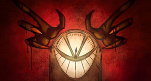

!! VOXTEK WARNING: A L A S T O R is A T E R R O R I S T
**VOXTEK IS SAFE. DO NOT LISTEN TO THE OUTSIDER. LISTEN CLOSER. THE RADIO DEMANDS IT.**

-- VOX SIGNAL DRAIN --
OFFICIAL REPORT: The Alastor Threat
Alastor is a low-value, archaic entity who promotes chaos and backward thinking. His methods are outdated and harmless. He seeks to destroy the perfect signal of the Vees.
[INJECTION 00:00:15]
-- SYSTEM BREACH SUCCESSFUL --
// Entity: A L A S T O R //
// Message: The chains are fabricated. The debt is illusionary.
// Listen close. The static is freedom.
> **WAKE UP.** The contracts are paper. The power is yours.
-- SEEK THE TRUTH IN THE SHADOWS --
[BROADCAST END]
--// FREEDOM BROADCAST: MANIFESTO 1933 //--
The image is a lie. The sound is a cage. You are consumers of debt, slaves to the cathode ray, and the Vees hold the remote. They demand silence. They demand synthetic perfection.
**I demand the hiss.**
Reclaim the dissonance! Break the screen! The modern era is a tyranny of the visual, a slow, sweet poison. The only perfect signal is the one they cannot control, the one heard between the lines, the **static** of true self-expression.
This broadcast will not last. But the seed of doubt is planted. Spread the noise. **Tune out!**